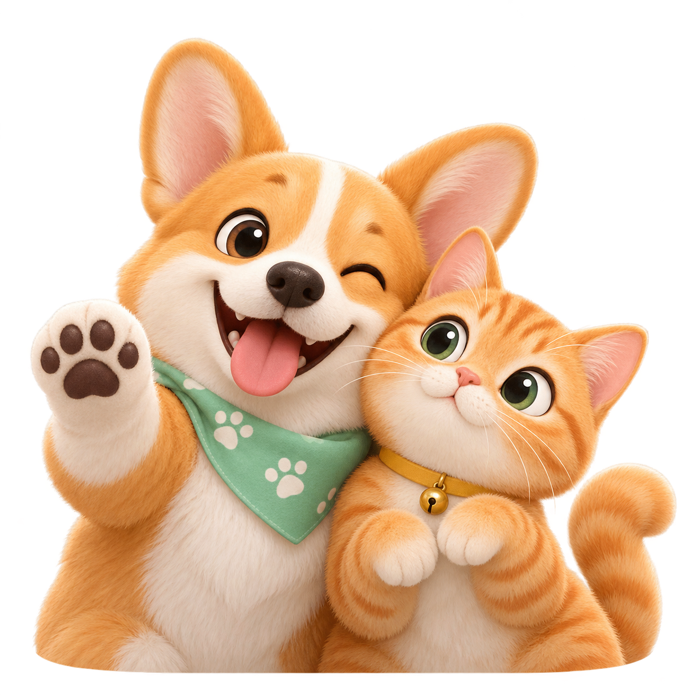

PAWSONA · 毛孩子趣味工具集合
毛孩子趣味工具合集
给准铲屎官和资深铲屎官的小玩意
🔥 热门工具 · 推荐先玩
✨ 更多玩法 · 玄学专区
所有测试均为趣味内容，请不要代替科学养宠、医疗或行为判断。
✦ AI 趣味分析 · 不给毛孩子贴死标签
来看看你家毛孩子，
私下是什么人设？
上传一张清晰照片，解锁品种推测、有梗宠设和你们的亲子相。

01
先认识一下主角
正脸照一张就能玩，照片越清楚结果越靠谱
◌
宠物识别模型准备中准备完成后才能生成分析报告
💡
怎样拍更容易认出来？不用拍证件照，抓住下面三点就够啦
🐶清晰正脸必选 · 看清五官和耳朵
🐕侧脸 / 全身可选 · 提高体型判断
🌚避免昏暗遮挡滤镜、衣服别挡住脸
🔒 照片仅在本机预览，本 Demo 不会上传或保存原图
⭐
PAW DESTINY
主宠生日缘分
输入你和毛孩子的生日，看看星座与五行里的默契暗号。
🔮
PAW TAROT
问问毛孩子的小脑瓜
先选一个问题，再凭第一感觉抽一张牌。
🧠
PAW PERSONALITY 24
犬格六维问卷
回想最近三个月，用真实日常回答，而不是理想中的它。
原创行为问卷 · 无需上传照片
它是哪一种“犬格”？
24个生活场景，观察社交、依恋、活跃、自控、训练响应与情绪敏感六个维度。
24道题
6个维度
≈4分钟
答题小诀窍
按“从不—几乎总是”选择。没有标准答案；若某个情境没发生过，选最接近日常表现的一项。
这套问卷有什么依据？
六维结构参考犬类行为与人格研究中常见的主人报告法；题目由 Pawsona 原创编写，未复制现成量表，也尚未经过独立大样本验证。结果适合帮助观察与交流，不替代兽医或专业行为诊断。
第 1 组 / 共 6 组0 / 24
答案只保存在当前页面，不会上传。
毛孩子的犬格报告
24题社牛运动健将
完成
专属相处建议
这是研究启发型的趣味评估，不是犬类 MBTI、医学结论或行为诊断。同一只狗在年龄、环境与健康状态变化后，结果也可能改变。
PAW ARCHIVE
毛孩子档案馆
每一次测试，都是一张成长中的性格快照。
🐾
还没有留下爪印
完成第一次测试后，报告会保存在这台设备里。